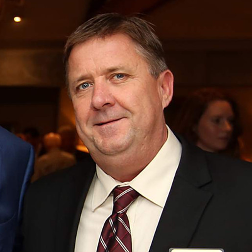

Rachel Hundley
Mayor
About
Rachel is currently the Mayor of the City of Sonoma. Rachel was elected to the city council for the City of Sonoma in 2014 and represents the city on a number of regional committees, including the Sonoma Disaster Council, the Sonoma Housing Corporation, the Sonoma Valley Economic Vitality Partnership Steering Committee and the Sonoma County Mayors & Councilmembers Legislative Committee.
Gary Edwards
Mayor Pro Tem
About
Gary was elected as Mayor Pro Tem in November of 2014 and continues to serve on the city council. He is also the President of Sage Marketing, LLC in Sonoma, California since 1991.
Contact Information
- (707) 695-0329
- 305 Chase St.
Sonoma, CA 95476
Madolyn Agrimonti
Councilmember

About
Madolyn Agrimonti is a Democrat who was elected im November of 2014 as Councilmember.
Contact Information
- (650) 740-2540
- Sonoma, CA 95476
David Cook
Councilmember
About
David Cook was first elected to the Sonoma City Council in November 2012 and served as Mayor of Sonoma in 2015. In November of 2016, David was re-elected to the Sonoma City Council for another 4 year term.
Social Media
Amy Harrington
Councilmember
About
Amy Harrington was elected as a Councilmember in November of 2016. She also serves on the City of Sonoma's Community Services and Environment Commission.
Marc Levine
Assembly Member
About
Assemblymember Marc Levine is a Democratic that was elected in November 2012 to represent the 10th Assembly District, comprised of Marin County and Southern Sonoma County. This includes the North Bay communities of Corte Madera, Cotati, Fairfax, Kentfield, Larkspur, Mill Valley, Novato, San Anselmo, San Rafael, Sausalito, Sebastopol, Tiburon, Penngrove, Petaluma, Sonoma, West Marin, and parts of the City of Santa Rosa.
Bill Dodd
Senator
About
Elected in November of 2016 to represent California’s 3rd Senate District, Senator Bill Dodd is a fifth generation Californian and lifelong resident of the district, where he grew up on a small family farm in Napa County. California’s 5th State Senate District includes portions of Sacramento, Yolo, Napa, Sonoma, Solano and Contra Costa Counties.
Mike Thompson
Representative
About
Mike Thompson represents California's 5th Congressional District. The district includes all of Napa and parts of Contra Costa, Lake, Solano and Sonoma Counties. He was first elected in 1998.
Dianne Feinstein
Senator
About
Rachel is currently the Mayor of the City of Sonoma. Rachel was elected to the city council for the City of Sonoma in 2014 and represents the city on a number of regional committees, including the Sonoma Disaster Council, the Sonoma Housing Corporation, the Sonoma Valley Economic Vitality Partnership Steering Committee and the Sonoma County Mayors & Councilmembers Legislative Committee.